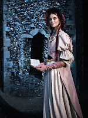
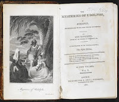
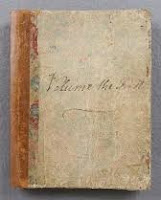
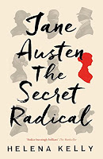

 |
| The ideas in this blog were developed for a recent talk at the Wolsey Theatre, Ipswich |
{kind=link}
Northanger Abbey is a novel with reading at its heart, a
coming-of-age novel in which Catherine Morland, the seventeen-year-old heroine, discovers the fallibility of Gothic
fiction as her guide to life:
Charming as were all
Mrs Radcliffe’s works and charming even as were the works of all her imitators,
it was not in them perhaps that human nature, at least in the midland counties
of England, was to be looked for.
“At least in the midland counties…”
Of the Alps and the
Pyrenees, with their pine forests and their vices, they might give a faithful
delineation; and Italy, Switzerland and the South of France, might be as
fruitful in horrors as they were there represented. Catherine did not dare
doubt beyond her own country, and even of that, if hard pressed, would have
yielded the northern and western extremities.
Catherine is reading Ann
Radcliffe’s 1794 bestseller The Mysteries of Udolpho but there’s no evidence that she finishes it. The events of her
own life become so compelling that she stops worrying whose skeleton lurks behind the black veil. She is made ashamed of her silliness investigating locked chests that contain only laundry lists and the bed chamber of a dead woman that contains nothing at all except fresh neat tidiness. "The anxieties of common life began soon to succeed to the alarums of romance". She worries that she hasn't had a letter from her best friend, Isabella, in Bath, therefore doesn't know whether she'd managed to match "some fine netting cotton on which she had left her intent." Alert readers will be quicker to guess that more than that may be happening back in Cheap Street and the Assembly Rooms...
Northanger
Abbey is meta-fiction, It’s overtly self-reflective and
ironic and its denouement – when all is revealed between the happy lovers –
allows Catherine to wonder whether she’d not been right all along, when she allowed the Gothic horrors to blacken her view of the world. (She) heard enough to
feel that, in suspecting the General of either murdering or shutting up his
wife, she had scarcely sinned against his character nor magnified his cruelty. Her shocked understanding typifies her
emotional, responsive innocence. Catherine is a teenager bewildered by her new experience of adult falsehood and complexity:That he was very
particular in his eating, she had, by her own unassisted observation, already
discovered; but why he should say one thing so positively, and mean another all
the while, was most unaccountable! How were people at that rate to be
understood?
{kind=link}

Helena Kelly’s provocative and stimulating book, Jane Austen: the Secret Radical confirms that if Catherine HAD finished The Mysteries of Udolpho she would have discovered that the villain had only ever been interested in the heroine’s money – just like the English General Tilney, owner of the impressively modernised and autocratically controlled Abbey who welcomes her with disturbing flattery then inexplicably ejects her into "a hack post-chaise". It's not until the final chapter of Austen's novel that Catherine learns that her only crime, in General Tilney's eyes was “being less rich that he had supposed her to be”. Money and love are inextricably entangled throughout Jane Austen's novels - as W.H. Auden pointed out in his poem "A Letter to Lord Bryon":But now the art for which Jane Austen fought
Under the right persuasion bravely warms
And is the most prodigious of the forms.
You could not shock her more than she shocks me
Beside her Joyce seems innocent as grass.
It makes me most uncomfortable to see
An English spinster of the middle class
Describe the amorous effects of brass.
Reveal so frankly and with such sobriety
The economic basis of society.
Austen did fight for her art but it was a technical battle -- and Northanger Abbey is the novel in which she set out her terms of engagement. It's a "how to" novel. The means by which Catherine discovers both personal happiness and the truth about the General's greed is conventional enough; she goes on an unchaperoned walk with the hero. But it’s not a very long walk “You can see
the house from the window,” says her guileless younger sister. The author adds a comment
I leave it to my
reader’s sagacity to determine how much of all this it was possible for Henry
to communicate at this time to Catherine; how much of it he could have learnt
from his father, in what points his own conjectures might assist him, and what
portion must yet remain to be told in a letter from James. I have united for
their ease what they must divide for mine.
 |
| One of JA's notebooks |
{kind=link}
The manuscript was not re-purchased until 1816, the last full year of her life and its return seems to have been felt as a mixed blessing. The public are entreated to bear in mind that thirteen years have passed since it was finished, many more since it was begun, and that during that period, places, manners, books, and opinions have undergone considerable changes.Austen sounds disappointed and uncomfortable with her earlier work and appears to have done nothing more with the book. In March 1817 she told her niece, Fanny, “Miss Catherine is put upon the Shelve for the present and I do not know that she will ever come out.” Austen was ill for most of the time after that date and died in July 1817. Northanger Abbey was published posthumously, together with Persuasion.
This sequence of events means that Northanger Abbey is most interestingly read as Jane Austen's first novel. Though Sense and Sensibility and Pride and Prejudice were drafted earlier, they were extensively re-written
before their publication in 1811 and 1813 respectively. Their voice is different -- worlds away from the comic raucousness of the very young Austen. Northanger Abbey, moth-balled on the publisher’s shelf from
1803 sits somewhere in between. It's the work of a writer in her mid-twenties, setting out -- as she hoped then -- on her professional career. It's assertive, even strident. Austen is telling her readers what she wants to do and how she intends to achieve this. It's almost a manifesto.
When a
young lady is to be a heroine, the perverseness of forty surrounding families
cannot prevent her. Something must and will happen to throw a hero in her way.
(That's the novelist's job and she gets straight on with it)
Mr Allen, who owned the chief of the property around Fullerton, the village in Wiltshire where the Morlands lived, was ordered to Bath for the benefit of a gouty constitution and his lady, a good humoured woman, fond of Miss Morland and probably aware that, if adventures will not befall a young lady in her own village, she must seek them abroad, invited her to go with them.
(That's the novelist's job and she gets straight on with it)
Mr Allen, who owned the chief of the property around Fullerton, the village in Wiltshire where the Morlands lived, was ordered to Bath for the benefit of a gouty constitution and his lady, a good humoured woman, fond of Miss Morland and probably aware that, if adventures will not befall a young lady in her own village, she must seek them abroad, invited her to go with them.
The perception that a heroine must "seek" adventure (ie that plots need happenings) is the author’s, not her character's The word “probably” is the clue. Mrs Allen’s placid stupidity ranks with that of Lady Bertram in Mansfield Park -- she could never have achieved that awareness herself.
There are many other examples throughout Northanger Abbey where Austen draws attention to her technique -- including a moment in the final chapter where she find herself in a quandary of her own making. She has built up the General as a modern-day
monster of the midlands but her heroine's mild, right-thinking parents insist that he must consent to his
son’s marriage with their daughter. How can he be manipulated into doing so?
The
anxiety which in this state of their attachment must be the portion of Henry
and Catherine, and of all who loved either, as to its final event, can hardly
extend, I fear, to the bosom of my readers who will see in the tell-tale compression
of the pages before them that we are all hastening together to perfect
felicity. The means by which their early marriage could be effected can be the
only doubt: what probable circumstance could work upon a temper like the
General’s?
Here again the key word is "probable". Whatever she chooses must be credible. Apparent ordinariness is Austen's particular achievement -- as Sir Walter Scott was one of the first to recognise:
(She) has a talent for
describing the involvement of feelings and characters of ordinary life
which is to me the most wonderful I have ever met with. The big bow-wow
strain I can do myself, like anyone now going; but the exquisite touch
which renders ordinary common place things and characters interesting,
from the truth of the description and the sentiment, is denied to me.
(Diary description of his responses to Pride and Prejudice)
{kind=link}

Deliberate mundanity is a form of literary radicalism. "No one who knew Catherine Morland from her infancy would have supposed her born to be an heroine" From the novel's opening lines Austen insists that her readers accept Catherine's limitations. She is naive, sometimes lazy, occasionally stupid, only "almost pretty" but she is truly a heroine because of the moral choices she makes (to walk with one friend rather than drive with another) and because of her everyday qualities of goodness. The hero, Henry Tilney, teases and patronises but sees her beautifully as herself: “You feel as you always do," he tells her, "What is most to the credit of human nature. Such feelings ought to be investigated that they may know themselves." And that could be a credo for the novelist as well.
In Jane Austen: The Secret Radical Helena Kelly attempts to set this radicalism in the political sphere.
“I’ve been working quite hard in this book to convince you that Jane is
an artist, that her work is carefully considered, structured, themed, that she
uses her writing to consider the great issues of the day.” She re-reads the
novels as cleverly coded attacks on slavery, enclosure, religion, the class
system, the subordination of women – etc. This may be so but it's not enough. Austen IS an artist -- and that is something different from being a politico-social commentator.
The "radical" conclusion to Kelly's discussion of Northanger Abbey veers alarmingly off course. Kelly is rightly appalled by the maternal mortality of Austen's time and is considering Catherine's future after her marriage. We can only hope that she carries on reading novels, that she keeps up a library subscription. There may come a time when the anxieties of common life – pregnancy,
childbirth – begin to seem for more threatening than the nightmares conjured up
by Mrs Radcliffe. Catherine might learn to value a library more for the medicines
it sells – the Balm of Gilead, the ‘female pills’ that promise to ‘restore’ the
menstrual cycle than for mere novels.
"Mere novels"! How could Helena Kelly have become so
fascinated by her own – admittedly fascinating – research in the sale of abortifacients that she reaches a
point that she can use the phrase “mere novels” in a discussion of Northanger Abbey?
‘Oh, it
is only a novel!’ replies the young lady; while she lays down her book with
affected indifference or momentary shame. ‘It is only Cecilia, or Camilla, or
Belinda’; in short it is only some work in which the greatest powers of the
mind are displayed, in which the most thorough knowledge of human nature, the
happiest delineations of its varieties, the liveliest effusions of wit and
humour are conveyed to the world in the best chosen language.
If this were a literary hustings Jane Austen could count on my vote.